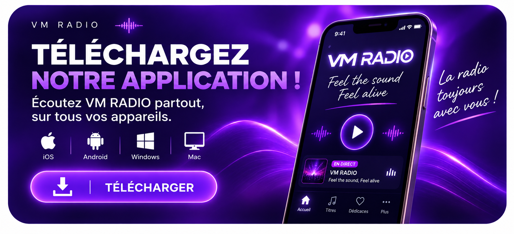

♡ DÉDICACES
Chargement des dédicaces…
EN DIRECT MAINTENANT
00:00
00:00
En direct
● LIVE
--:--
|
--
● Rotation
● Demande
● Émission
● Jingle
--:--
♡
DÉDICACES
Faites passer un message à l’antenne.
♫
DEMANDE DE TITRES
Choisissez un morceau de la playlist VM RADIO.
▥
TOP TITRES
Les morceaux les plus aimés par la communauté.
♪
TIKTOK
Suivez toute notre actu et nos nouveautés.
3 DERNIERS TITRES
▥ RESTEZ CONNECTÉ AVEC VM RADIO !
Recevez nos actus, nos nouveautés et bien plus encore.